The Delivery Date, or Lead Time Transit Days, preference enables the automatic calculation of the Promised Delivery Date (RSDJ), Promised Ship Date (PPDJ), and/or Pick Date (PDDJ) on the sales order detail line. Note: These dates are not calendar days, they may fall on the weekend.
This preference is also applied at time of Inventory Commitments (R42997), if used in conjunction with Inventory Commitments Preference
Scope
Details
Basic Preference Setup (Menu G4231)
Preference Definition
From Preference Master (P40070), inquire on Delivery Date and take Row Exit to Hierarchy (P40073).
Note: In this example, Enable Quantity was not activated.
Verify that the hierarchy is set up as desired.
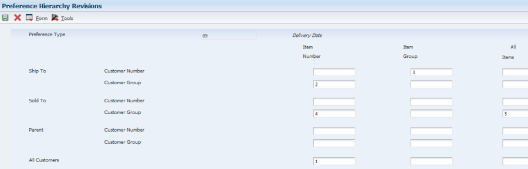 Note: In this example, the preference will be defined based on Customer Group, so it’s required that at least one of the Customer Group categories are selected in the hierarchy.
To set up customer group, in Preference Master (P40070), take the Form Exit to Customer Groups
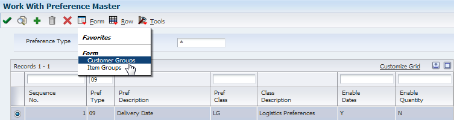
Search by customer number, then select customer to enter the customer group in the Delivery Date option.
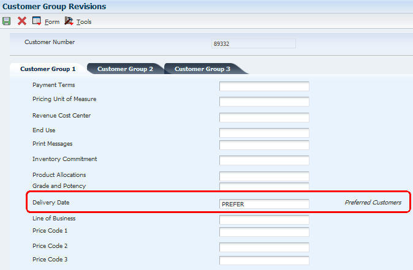
To set up the preference, in Preference Master (P40070) take the Row Exit to Profiles, then add the new preference.
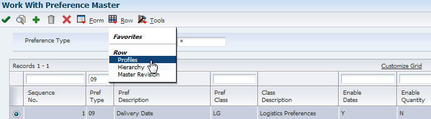
Enter the preference set up information. In this example, the Transit Days has been set to 8 calendar days.
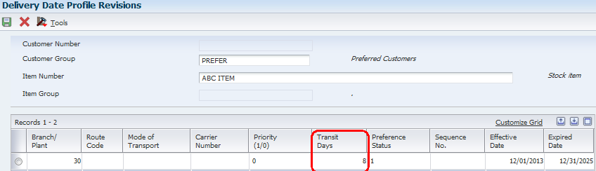
Sales Order Entry (P4210) Processing Options
Preference Tab – activate preference processing
Versions tab – version of Preference Profile (R40400) is the default, which is ZJDE0001
Preference Profile Processing (R40400) – activated Delivery Date on Process Control 2 tab
Example: Sales Order Entry (P4210/P42101), Menu G4211
Enter a sales order for the item and a customer with the customer group defined. Notice that the Promised Delivery Date (RSDJ) is populated 8 days in the future to account for the transit days.
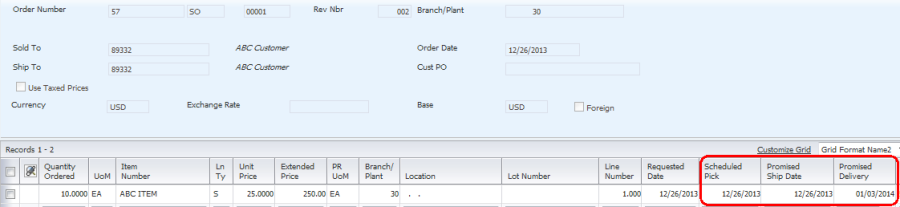
When updating one of the date fields, or copying the sales order, the Scheduled Pick Date (PDDJ) and Promised Ship Date (PPDJ) need to be blanked out when updating Promised Delivery Date (RSDJ), in order for the Delivery Date Preference to be applied and recalculate the dates.
Example when updating an existing sales order
In sales order SO 57 (shown in example above), change the Promised Delivery Date (RSDJ) and notice that the Pick Date (PDDJ) and Promised Ship Date (PPDJ) are not recalculated.
2. When the new Promised Delivery Date (RSDJ) is entered, and the Pick Date (PDDJ) and Promised Ship Date (PPDJ) are blanked out, the new dates are calculated based on the Delivery Date Preference.
Advanced Preference Setup (Menu G40311)
Advanced Preference Definition (P4071)
Note: In this example, the advanced preference is defined based on Item Group ‘ACCESSRY’. See ‘Setting Up Item Group’ below for this set up. Preference hierarchy in the definition is the same as the basic preference example.
Setting Up Item Group
From menu G4231112, select Item Price Groups (P4092) to add item group. In this example, a complex Item Group is set up to use SRP1 and SRP2.
Note: This preference works with both complex and simple Item Groups.
Item Master (P4101), Category Codes – set up SRP1 using ‘BIK’ and SRP2 as ‘COM’
Advanced Preference Detail (P4072)
In this example, the detail is set up based on Customer/Item Group.
Take Row Exit to Pref Details and set up Transit Days and Business Unit (optional). In this example, for Branch Plant CH, the Transit Days have been defined as 7.
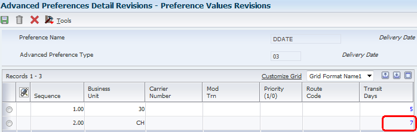
Note: In this example, Carrier Number, Mode of Transportation and Route Code are not populated. If they are populated, the Priority Code must be defined in Customer Master, Billing Information (P03013), Billing Page 2.
Advanced Preference Schedule (P4070)
Sales Order Entry (P4210) Processing Options
Preference Tab – activate preference processing and in this example, define the Advanced Preference Schedule.
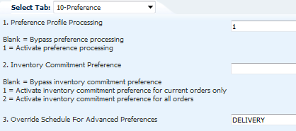
Note: The Advanced Preference Schedule may alternately be defined in the System Constants (P41001), rather than P4210 processing options.
Example: Sales Order Entry (P4210/P42101), Menu G4211
Add a new sales order with the Requested Date (DRQJ) in the future. The Pick Date (PDDJ) and Promised Ship Date (PPDJ) are 7 days prior this date to account for the in transit days, and the Promised Delivery Date (RSDJ) is the same as the Requested Date (DRQJ).
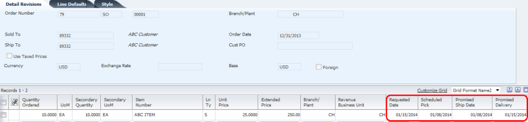
Primary Keys in Basic and Advanced Preference Detail Records
Sequence Number (OSEC) is one of the primary keys in searching for basic or advanced preference detail records. Basic preference detail records are stored in F40309 (Preference Profile - Delivery Date) and advanced preference detail records are stored in F4072 (Adjustment Detail). At Sales Order Entry (P4210/P42101), starting with Sequence 1.00, the system will search for a match based on the key fields populated in the Sales Order Header. Once a match has been found, the system applies the preference.
For the Delivery Date preferences, Route Code (ROUT) and Mode of Transport Code (MOT) are also primary key fields to select the preference detail record. If the preference is configured with one or both of these fields defined, this information must be manually populated in the Sales Order Header in order for the preference record (and transit days) to be found.
The Business Unit (MCU), Carrier Number (CARS) and Priority Code (PRIO) fields can be used as additional conditions for the preference. If using Priority Code, it must be set up in the Customer Master, Billing Instructions (P03013).
The number of preference detail records set up (basic or advanced) can impact performance at Sales Order Entry (P4210/P42101). For this reason, keeping the adjustment combinations at a reasonable number is recommended.
Example: Advanced Preference Based on Sequence Number and Mode of Transport
Advanced Preference Detail (P4072) – set up by Item Number
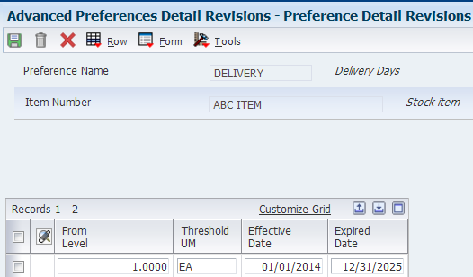
In the Preference Value Revisions, set up Sequence Numbers 1.00, 2.00 and 3.00. Each has a different Mode of Transport and Transit Days.
Add a sales order and manually set Mode of Transport = 3 in Additional Header Information
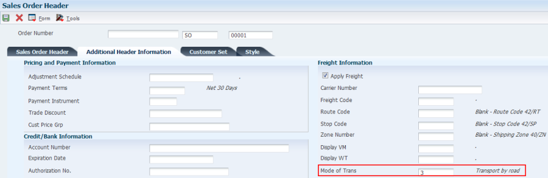
In the order detail, enter item and tab down. Notice the Promised Delivery Date is set to 7 days after the Promised Ship Dated, so the in transit days for Mode of Transport 3 were applied.
Additional Information
This preference is often used in conjunction with the Order Preparation Days preference. The Delivery Date (lead time transit) preference days represents the minimum number of days between order shipment and delivery, while the Order Preparation preference days represents the days between Pick Date (PDDJ) and shipment date. Together, they provide the ability to back schedule the Pick Date (PDDJ) based on the Promised Delivery Date (RSDJ).
Without using Transportation, Pick Date (PDDJ) will always be driven by the Promised Delivery Date (RSDJ) and /or Ship Date, and cannot be calculated on its own. For information on the date calculations with Transportation, please see Promised Shipment and Delivery Date Calculation).
In change or copy mode, if the Promised Delivery Date (RSDJ) is revised, the other dates will not be recalculated until the existing value is blanked out. Additional information can be found in Bug 10967054.